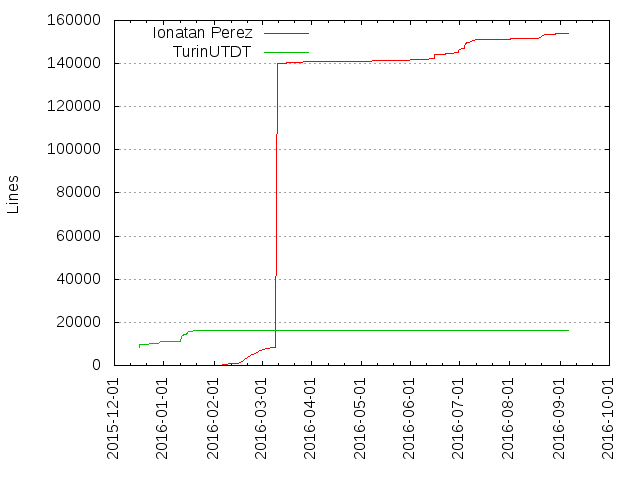
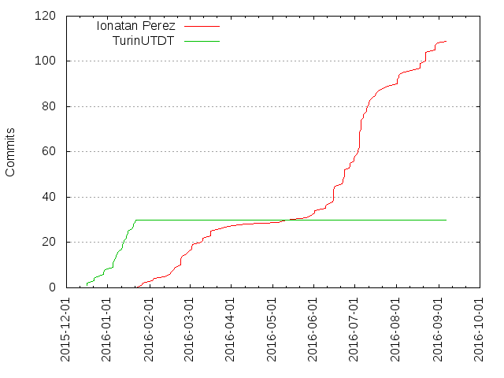

Authors
| Author | Commits (%) | + lines | - lines | First commit | Last commit | Age | Active days | # by commits |
|---|
| Ionatan Perez | 109 (78.42%) | 153793 | 152173 | 2016-01-25 | 2016-09-06 | 224 days, 22:40:16 | 61 | 1 |
| TurinUTDT | 30 (21.58%) | 16338 | 6148 | 2015-12-16 | 2016-01-21 | 36 days, 5:38:20 | 18 | 2 |


| Month | Author | Commits (%) | Next top 5 | Number of authors |
|---|
| 2016-09 | Ionatan Perez | 1 (100.00% of 1) | | 1 |
| 2016-08 | Ionatan Perez | 19 (100.00% of 19) | | 1 |
| 2016-07 | Ionatan Perez | 32 (100.00% of 32) | | 1 |
| 2016-06 | Ionatan Perez | 25 (100.00% of 25) | | 1 |
| 2016-05 | Ionatan Perez | 4 (100.00% of 4) | | 1 |
| 2016-04 | Ionatan Perez | 1 (100.00% of 1) | | 1 |
| 2016-03 | Ionatan Perez | 11 (100.00% of 11) | | 1 |
| 2016-02 | Ionatan Perez | 14 (100.00% of 14) | | 1 |
| 2016-01 | TurinUTDT | 22 (91.67% of 24) | Ionatan Perez | 2 |
| 2015-12 | TurinUTDT | 8 (100.00% of 8) | | 1 |
| Year | Author | Commits (%) | Next top 5 | Number of authors |
|---|
| 2016 | Ionatan Perez | 109 (83.21% of 131) | TurinUTDT | 2 |
| 2015 | TurinUTDT | 8 (100.00% of 8) | | 1 |
| Domains | Total (%) |
|---|
| gmail.com | 139 (100.00%) |
|---|